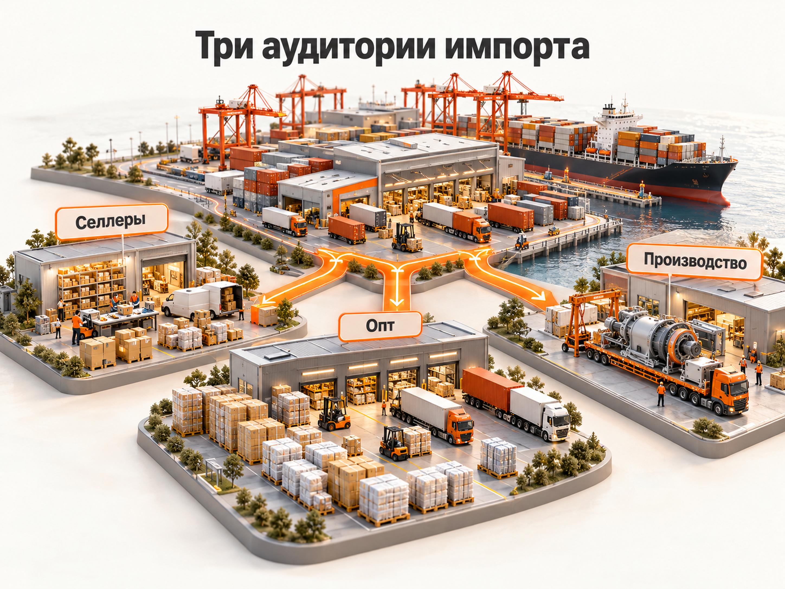

Блог о платном трафике
Продвижение импорта и доставки из Китая в 2026 году: реклама, клиенты и прогноз
Чтобы привлекать клиентов на импорт и доставку товаров из Китая, я бы начинал с Яндекс Директа на Поиске. Основной принцип - разделять рекламу по услугам и типам заказчиков. Компания, которой нужна доставка промышленного оборудования с таможенным оформлением, и продавец Wildberries, закупающий товары на 1688, имеют разные задачи.
Для первоначального прогноза можно заложить 1800‑3000 ₽ за обращение из Яндекс Директа. Это расчётный ориентир на основе опубликованных проектов, а не средняя стоимость заявки по рынку. При бюджете 100 000 ₽ и условном CPL 2500 ₽ получится около 40 обращений. Сколько из них станут клиентами, зависит от минимального объёма партии, предложения компании и работы отдела продаж.
В этой нише важно считать не только обращения. Нужно отдельно понимать, сколько людей подходят по типу груза и объёму заказа, сколько получили коммерческий расчёт и сколько в итоге заключили договор.
Кому продавать услуги импорта из Китая
Услуги импорта из Китая ориентированы на несколько B2B-аудиторий. Объединять их в одну рекламную кампанию невыгодно: отличаются поисковые запросы, требования к поставке и потенциальная стоимость клиента.
| Аудитория | Что требуется | На чём строить рекламу |
|---|---|---|
| Селлеры Wildberries и Ozon | Поиск товара, выкуп, доставка партий, документы, маркировка | Минимальная партия, условия закупки, сопровождение |
| Оптовики и дистрибьюторы | Регулярные поставки, контейнеры, консолидация грузов | Стоимость логистики, стабильность, сроки |
| Производственные компании | Станки, оборудование, сырьё, комплектующие | Проверка поставщика, официальный импорт, таможня |
Например, запрос «выкуп товара с 1688» предполагает посредническую услугу. А человек, который ищет «доставка станка из Китая», может уже иметь поставщика и нуждаться только в логистике и таможенном оформлении.
Отдельное направление - комплексные услуги внешнеэкономической деятельности. Такие заказчики могут искать компанию, которая возьмёт на себя поиск производителя, проверку товара, оплату, перевозку и оформление документов.
Главный вывод: рекламные сегменты нужно определять не только по ключевым словам, но и по задачам заказчика и экономике потенциальной сделки.

Какие услуги импорта из Китая выгоднее рекламировать
В первую очередь я бы рекламировал те услуги, где клиент уже понимает свою задачу и готов запросить коммерческое предложение.
На практике это несколько направлений:
- Импорт из Китая под ключ. Для компаний, которые хотят передать одному подрядчику весь процесс закупки и доставки.
- Доставка грузов из Китая. Для клиентов с готовым поставщиком и потребностью в перевозке.
- Выкуп товаров из Китая. Для предпринимателей, которым необходим посредник при закупке.
- Поиск и проверка поставщиков. Для бизнеса, выбирающего фабрику или производителя.
- Таможенное оформление и официальный импорт. Для компаний, которым нужны документы для дальнейшей реализации или использования товара.
- Импорт оборудования из Китая. Для производственных предприятий, закупающих станки и комплектующие.
Приоритет зависит от компании. Если она работает только с официальными контейнерными поставками, привлекать массовый спрос на небольшие партии бессмысленно.
И наоборот: посреднику по выкупу товаров с китайских площадок не стоит делать основной упор на рекламу сложного промышленного импорта.
В каждом случае нужно сначала определить, какую услугу компания действительно способна продать с прибылью.
Какие каналы продвижения импорта из Китая использовать
Для компании с ограниченным рекламным бюджетом я бы не запускал одновременно все площадки. Сначала необходимо получить первые данные о спросе и качестве заявок.
| Канал | Основная задача | Приоритет |
|---|---|---|
| Яндекс Директ, Поиск | Привлечение клиентов с готовой потребностью | Высокий |
| РСЯ | Расширение охвата и возврат заинтересованных пользователей | После проверки Поиска |
| SEO | Привлечение коммерческого и информационного поискового трафика | Параллельно |
| VK Реклама | Поиск предпринимателей и отдельных B2B-аудиторий | Дополнительный тест |
| Telegram | Формирование доверия, экспертный контент, повторные контакты | Для длинной воронки |
Для первичного запуска я бы выбрал Поиск Яндекс Директа.
SEO стоит развивать параллельно, поскольку результат поискового продвижения обычно появляется не сразу. Коммерческие страницы могут привлекать заказчиков по конкретным услугам, а информационные материалы помогают отвечать на вопросы потенциальных клиентов до обращения.
РСЯ, VK и Telegram имеет смысл оценивать после появления понятной экономики привлечения, а не просто потому, что эти каналы доступны.
Как настроить Яндекс Директ для доставки и импорта из Китая
На Поиске Яндекс Директа основную структуру рекламы я бы строил вокруг конкретных услуг. Это помогает показывать человеку подходящее объявление и вести его на соответствующую страницу.
| Направление | Примеры поисковых запросов |
|---|---|
| Импорт под ключ | импорт из Китая под ключ, поставки из Китая для бизнеса |
| Доставка | доставка грузов из Китая, грузоперевозки из Китая |
| Выкуп | выкуп товаров с 1688, посредник по закупкам в Китае |
| Поставщики | поиск поставщика в Китае, проверка фабрики в Китае |
| Таможня | таможенное оформление грузов из Китая, официальный импорт из Китая |
| Оборудование | доставка станков из Китая, импорт оборудования из Китая |
Это примеры семантики, а не готовый список фраз для запуска. Каждое направление нужно проверить на реальный спрос, коммерческий интент и соответствие услугам компании.
Как распределить кампании
Я бы начинал с нескольких основных направлений, не дробя небольшой бюджет на десятки кампаний.
Например, импорт под ключ, доставка и выкуп товаров могут стать тремя самостоятельными направлениями. Если статистики мало, близкие по смыслу группы можно объединить, сохранив разделение объявлений и посадочных страниц.
Отдельно имеет смысл анализировать географию. Для бизнеса, работающего по всей России, можно проверить различия между Москвой, Санкт-Петербургом и другими регионами.
Однако разделение по регионам должно быть оправдано объёмом спроса и статистикой. При небольшом бюджете избыточная детализация только усложнит обучение рекламных стратегий.
Какие запросы исключать
Главная проблема широких фраз - смешение коммерческого и нецелевого спроса.
Например, запрос «доставка из Китая» может относиться как к контейнерной перевозке для юридического лица, так и к частной посылке.
Поисковые запросы необходимо проверять на наличие:
- частных посылок и отслеживания заказов;
- AliExpress и розничных покупок;
- вакансий и трудоустройства;
- самостоятельной доставки без посредника;
- обучения торговле с Китаем;
- бесплатных инструкций и справочных материалов.
Такие запросы не всегда нужно исключать автоматически. Например, компания, которая работает с небольшими партиями для селлеров, может получать клиентов по более широким формулировкам.
Минус-фразы определяются реальной бизнес-моделью компании, а не универсальным списком.
Примеры рекламных объявлений для импорта из Китая
Хорошее объявление должно сразу показывать, какую задачу решает компания.
Для импорта под ключ:
Заголовок: Импорт товаров из Китая для бизнеса
Текст: Поиск поставщика, выкуп, логистика и таможенное оформление. Рассчитайте стоимость поставки.
Для логистической компании:
Заголовок: Доставка грузов из Китая для юридических лиц
Текст: Перевозка коммерческих партий. Подбор маршрута, расчёт стоимости и сопровождение груза.
Для поставок оборудования:
Заголовок: Импорт оборудования из Китая под ключ
Текст: Помощь с закупкой станков, перевозкой и таможенным оформлением. Запросите расчёт.
Это примеры рекламных формулировок, а не обещания условий конкретной компании. Перед запуском нужно проверить, какие услуги исполнитель действительно оказывает.
Если есть подтверждённые преимущества, их стоит указывать точнее: минимальный вес партии, договор, возможность страхования, склад в Китае или конкретные способы перевозки.
В объявлениях лучше не писать просто «быстро, качественно, надёжно». Для B2B-клиента намного важнее понятные условия сотрудничества.
Когда подключать РСЯ
РСЯ подходит для тестирования дополнительного спроса и повторного обращения к заинтересованным пользователям. Но считать её гарантированным источником дешёвых заявок нельзя.
В опубликованных кейсах логистики встречаются разные результаты: где-то сети дают существенную долю обращений, а где-то не приносят конверсий.
Поэтому я бы проверял РСЯ отдельно от Поиска.
В качестве гипотез можно использовать аудитории, связанные с предпринимательством, логистикой, закупками и внешнеэкономической деятельностью, а также сегменты посетителей сайта.
Для ретаргетинга особенно интересны пользователи, которые уже изучали условия доставки или начали оформлять заявку, но не отправили её.
Если компания специализируется на промышленном импорте, креатив должен показывать соответствующий груз и услугу. Универсальные картинки с китайскими флагами и контейнерами могут привлечь внимание, но не всегда помогают квалифицировать клиента.
Каким должен быть сайт компании по импорту из Китая
Для бизнеса, работающего с зарубежными поставками, посадочная страница должна не просто собирать заявки, а подтверждать способность компании выполнить заказ.
Потенциальный клиент может передавать посреднику крупную сумму за товар и доверять ему груз стоимостью в миллионы рублей.
Поэтому одного обещания «доставка из Китая под ключ» недостаточно.
На странице желательно показывать:
- Конкретные услуги и категории клиентов.
- Минимальный объём или стоимость партии.
- Порядок работы от заявки до получения груза.
- Документы, которые получает заказчик.
- Условия оплаты, страхования и ответственности.
- Реальные фотографии складов, команды и выполненных поставок.
- Примеры расчётов и способы доставки.
- Форму для предварительного расчёта.
Хорошая форма должна собирать сведения, которые действительно нужны для оценки заказа: товар, вес, объём, стоимость партии, пункт назначения и наличие поставщика.
Например, вместо универсальной кнопки «Оставить заявку» можно использовать «Рассчитать стоимость поставки из Китая».
Такой запрос лучше соответствует задаче клиента, который пока сравнивает предложения логистических компаний.
Нужен ли калькулятор доставки
Калькулятор полезен, если позволяет получить хотя бы предварительную оценку. Но показывать вымышленную точную стоимость при недостатке исходных данных не стоит.
На стоимость перевозки могут влиять габариты, вес, категория товара, маршрут, способ доставки, таможенные платежи и условия поставки.
Поэтому для сложных B2B-грузов более практичным решением часто становится форма запроса расчёта, а не калькулятор с условной ценой за килограмм.
Реальные результаты рекламы доставки из Китая
Для оценки стоимости привлечения клиентов полезнее смотреть опубликованные проекты с конкретными цифрами, чем универсальные рекламные обещания.
В кейсах по доставке и логистике из Китая есть несколько ориентиров.
| Проект | Опубликованный результат | Что учитывать |
|---|---|---|
| Mandzhi Group, кейс 2026 года | 207 целевых заявок за 6 месяцев, CPL 1872 ₽ | Результат после переработки рекламы и сайта |
| Байкал Таргет, публикация октября 2025 года | 65 заявок за первый месяц, CPL 904 ₽ | Сильный результат конкретного проекта, не рыночная норма |
В первом проекте специалисты пересмотрели структуру кампаний, настройки аналитики и отдельные элементы сайта. За шесть месяцев, согласно опубликованному описанию, было получено 207 целевых заявок по 1872 ₽.
Во втором кейсе опубликованы 65 обращений, 48 консультаций и 19 сделок. Если рассчитать конверсию по этим числам, получается около 29% сделок от всех обращений и около 40% от консультаций.
Это высокая закрываемость. Использовать её как ожидаемую конверсию для нового рекламодателя без собственной статистики я бы не стал.
Нужно учитывать ещё одно ограничение: авторы кейсов могут по-разному определять целевую заявку. В одном проекте учитываются все отправленные формы, в другом только обращения после первичной проверки.
Поэтому сравнение CPL без единой методики квалификации может давать неправильные выводы.
Сколько стоит заявка на импорт из Китая в 2026 году
Для стартового медиаплана я бы использовал 1800‑3000 ₽ за первичное обращение из Яндекс Директа.
Этот диапазон не является результатом репрезентативного исследования всего рынка. Он выбран как рабочая гипотеза с учётом опубликованных кейсов и необходимости предусмотреть запас на конкуренцию, нецелевые обращения и обучение рекламных кампаний.
В отдельном проекте CPL может оказаться и ниже 1000 ₽. Но ориентироваться на такой результат при планировании новой кампании слишком оптимистично.
Для сложных официальных поставок, промышленного оборудования и узких B2B-направлений стоимость заявки может превышать 3000 ₽.
Кроме того, следует различать три показателя:
CPL - стоимость первичного обращения.
Стоимость квалифицированного лида - расходы на рекламу, разделённые на число обращений, которые действительно подходят компании.
CAC - стоимость привлечения клиента, заключившего договор.
Если у двух кампаний одинаковый CPL, это ещё не означает одинаковую эффективность.
Одна может привлекать покупателей небольших посылок, а другая - компании с регулярными контейнерными поставками.
Прогноз заявок при рекламном бюджете 100 000 ₽
Рассчитаем возможный результат Яндекс Директа при месячных расходах на рекламный трафик 100 000 ₽.
В расчёте использую два условных коэффициента:
- 50% первичных обращений проходят квалификацию;
- 30% квалифицированных лидов доходят до договора.
Общая конверсия первичного обращения в клиента составляет 15%.
Это сценарные допущения для расчёта, а не подтверждённые средние показатели логистических компаний.
| Сценарий | CPL | Все обращения | Квалифицированные | Договоры | CAC |
|---|---|---|---|---|---|
| Сильный | 1800 ₽ | ≈56 | ≈28 | ≈8 | ≈12 500 ₽ |
| Рабочий | 2500 ₽ | 40 | 20 | 6 | ≈16 700 ₽ |
| Осторожный | 3500 ₽ | ≈29 | ≈14 | ≈4 | ≈25 000 ₽ |
Количество обращений и договоров округлено. CAC рассчитывается по модельному числу договоров.
В таблице изменяется стоимость первичного обращения, а конверсии в квалифицированный лид и договор остаются одинаковыми. Это позволяет отдельно увидеть влияние CPL на экономику.
Подробный расчёт рабочего сценария
При CPL 2500 ₽ рекламный бюджет 100 000 ₽ даст:
- 40 первичных обращений.
- 20 квалифицированных лидов, если подходит половина.
- 6 договоров, если 30% квалифицированных лидов становятся клиентами.
Стоимость квалифицированного лида:
100 000 / 20 = 5000 ₽.
Стоимость привлечённого клиента:
100 000 / 6 = 16 667 ₽.
В этом примере 2500 ₽ - стоимость обычного обращения, 5000 ₽ - квалифицированного лида, а около 16 700 ₽ - одного привлечённого клиента.
Это принципиально разные показатели.
Прогноз не учитывает оплату работы специалиста, создание сайта и другие сопутствующие расходы. При составлении фактического бюджета также нужно учитывать применимые налоги и порядок расчёта рекламных расходов.
Как рассчитать допустимую стоимость заявки
Допустимый CPL определяется экономикой сделки, а не тем, сколько платят конкуренты.
Предположим, компания готова потратить на нового клиента не более 30 000 ₽.
Если 15% первичных обращений заканчиваются договором, предельная стоимость заявки рассчитывается так:
30 000 × 15% = 4500 ₽.
При таком условии CPL 2500 ₽ укладывается в установленный предел.
Но сначала нужно определить, откуда берутся допустимые 30 000 ₽.
Для этого стоит учитывать:
- выручку и валовую прибыль от поставки;
- прямые и переменные расходы;
- вероятность повторного заказа;
- допустимую долю прибыли на привлечение клиента;
- продолжительность цикла сделки.
Особенно важно не путать стоимость перевозимого товара с доходом логистической компании.
Заказ на доставку груза стоимостью 5 млн ₽ не означает, что компания заработает на нём 5 млн ₽.
Маркетинговый бюджет должен опираться на реальную маржу от услуги, а не на цену товара клиента.
Если заказчики регулярно возвращаются с новыми поставками, допустимый CAC может быть выше, чем у компании с разовыми заказами. Но повторные продажи должны подтверждаться фактическими данными, а не предположением.
Как квалифицировать заявки на доставку из Китая
Для импорта из Китая квалификация обращений особенно важна. Она позволяет отделять потенциальных B2B-заказчиков от людей с неподходящими объёмами грузов и запросами.
На этапе заявки желательно получать следующие сведения:
| Поле | Зачем нужно |
|---|---|
| Тип товара | Проверить возможность перевозки |
| Вес и объём | Определить масштаб поставки |
| Стоимость партии | Оценить экономику и условия |
| Город доставки | Понять маршрут |
| Наличие поставщика | Определить необходимость поиска и выкупа |
| Требуемые услуги | Разделить логистику и импорт под ключ |
После первичного общения менеджер должен присваивать обращению соответствующий статус в CRM.
Например: квалифицированный клиент, нецелевой запрос, отправлен расчёт, договор заключён.
При этом полезно сохранять причину отказа: слишком маленькая партия, неподходящий товар, нецелевой регион или отсутствие реальной потребности.
Как передавать качество лидов в Яндекс Директ
Яндекс Метрика поддерживает загрузку офлайн-конверсий и информации из CRM. Это позволяет связывать рекламные обращения с последующими действиями клиента.
На практике я бы настраивал передачу подтверждённых этапов: квалификация заявки, отправка расчёта, заключение договора.
Для привязки событий необходимо корректно сохранять идентификаторы посетителей. Переданные события должны связываться с исходными визитами, иначе использовать их для полноценной оптимизации рекламы не получится.
Подробнее о механике написано в статье «Офлайн-конверсии в Яндекс Директе».
Смысл такой аналитики не только в отчётах. Она помогает определить, какие направления приводят клиентов с подходящими грузами, а какие расходуют бюджет на неподходящие обращения.
На какую цель оптимизировать рекламу
Я бы не выбирал заключение договора единственной целью с первого дня, если таких событий мало.
Яндекс рекомендует использовать для обучения конверсионной стратегии цель, которая достигается не реже 10 раз в неделю. При небольшом объёме данных стратегия может обучаться нестабильно.
Поэтому оптимизация должна учитывать количество событий.
На первом этапе можно работать с подтверждёнными обращениями. По мере накопления достаточной статистики переходить к более глубоким целям.
Важно не объединять в одну равноценную цель отправку формы, клик по мессенджеру и заключённый договор. Эти действия имеют разную ценность для бизнеса.
Как использовать SEO для привлечения клиентов на импорт из Китая
SEO здесь полезно не только для общих запросов вроде «доставка из Китая».
Потенциальные заказчики ищут конкретные услуги, способы решения проблем и ответы на вопросы по ВЭД.
Я бы разделил поисковое продвижение на два типа страниц.
Коммерческие страницы должны отвечать на запросы пользователей, которые уже выбирают исполнителя:
- импорт из Китая под ключ;
- доставка оборудования из Китая;
- выкуп товаров с 1688;
- поиск поставщика в Китае;
- таможенное оформление товаров из Китая.
Информационные статьи могут раскрывать вопросы до принятия решения:
- как проверить китайскую фабрику;
- чем отличаются карго и официальный импорт;
- какие документы нужны для поставки;
- из чего складывается стоимость доставки;
- как выбрать поставщика и логистическую компанию.
Информационные материалы стоит связывать с соответствующими коммерческими страницами, а не пытаться продавать услугу в каждом абзаце.
Для поисковых систем и нейросетей особенно полезны материалы с понятными условиями, проверяемыми цифрами, расчётами и конкретными ограничениями.
Например, статья о стоимости перевозки должна объяснять, какие параметры нужны для расчёта, а не обещать универсальную цену без учёта характеристик груза.
Для рекламной части полезно учитывать и общую специфику B2B. Её я разбираю отдельно в статье «Яндекс Директ для B2B».
С какого бюджета начинать рекламу импорта из Китая
Для первого теста по России я бы рассматривал бюджет примерно 80 000‑120 000 ₽ в месяц на рекламный трафик.
Это не минимальная сумма, при которой Яндекс Директ технически может работать. Это ориентир для первоначального медиаплана, позволяющий при расчётном CPL 1800‑3000 ₽ собрать некоторое количество обращений.
Например, 100 000 ₽ при CPL 2500 ₽ дают около 40 заявок.
При этом такого количества может быть недостаточно для достоверной оценки всех направлений по отдельности, особенно если компания работает с крупными поставками и длинным циклом сделки.
Поэтому на старте я бы ограничил число рекламируемых услуг и не распределял небольшой бюджет между множеством кампаний.
Если компания работает в узком регионе или только с определёнными категориями оборудования, медиаплан нужно рассчитывать отдельно на основании спроса и прогноза трафика.
Как запускать продвижение: последовательность работ
Для компании, которая ещё не рекламировала услуги импорта из Китая, я бы использовал следующую последовательность.
Первый этап. Определить экономику и аудиторию.
Разобрать основные услуги, минимальные партии, прибыль с заказа, географию работы и допустимую стоимость привлечения клиента.
Второй этап. Подготовить рекламу и посадочные страницы.
Собрать коммерческую семантику, разделить основные услуги, подготовить объявления и страницы с подтверждёнными условиями работы.
Третий этап. Настроить аналитику и запустить Поиск.
Подключить Метрику, отслеживание обращений, звонков и CRM. Запустить наиболее перспективные направления и проверить поисковые запросы.
Четвёртый этап. Оценить качество заявок.
Сравнивать не только CPL, но и долю квалифицированных клиентов, стоимость расчётов, договоров и фактическую прибыль.
После накопления достаточных данных можно расширять семантику, перераспределять рекламный бюджет и тестировать дополнительные каналы.
Основные ошибки продвижения импорта из Китая
Наиболее опасная ошибка - оптимизация рекламы только по количеству заявок.
Даже дешёвые обращения могут оказаться бесполезными, если компания привлекает неподходящие грузы и заказчиков.
Другие типичные проблемы:
- Одна кампания и одна посадочная страница для всех услуг.
- Широкие запросы без контроля фактического поискового спроса.
- Отсутствие минимальной партии и условий сотрудничества на сайте.
- Недостаток реальных доказательств работы компании.
- Отсутствие квалификации обращений в CRM.
- Оптимизация на клики по контактам вместо подтверждённых обращений.
- Оценка результата только за первую неделю при длительном цикле заключения договора.
Особенно внимательно я бы относился к последнему пункту.
Если потенциальный клиент сначала запрашивает коммерческое предложение, затем согласовывает маршрут, условия перевозки и оплату, фактическая сделка может произойти значительно позже первоначального обращения.
Поэтому отчёт по расходам за один месяц не всегда полностью отражает результаты привлечённых в этот месяц клиентов.
Вывод: как привлекать клиентов на импорт из Китая
Для компаний по импорту и доставке грузов из Китая я бы сделал основным платным каналом Яндекс Директ на Поиске, а SEO развивал параллельно.
Главное - разделить клиентов по типам услуг и не оценивать все обращения одинаково.
Стартовый расчётный CPL 1800‑3000 ₽ позволяет составить предварительный медиаплан. При бюджете 100 000 ₽, стоимости обращения 2500 ₽ и условной конверсии 15% из заявки в договор получается около шести клиентов.
Но ключевой результат для бизнеса - не цена заявки сама по себе, а стоимость заключённого договора и прибыль от привлечённых клиентов.
Если требуется рассчитать бюджет и рекламную экономику конкретной компании, для начала нужны перечень услуг, минимальный объём партии, регионы работы и данные о прибыли с заказа. На основании этих условий уже можно составлять прогноз Яндекс Директа.